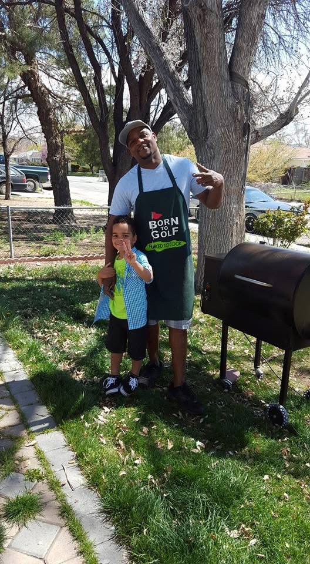
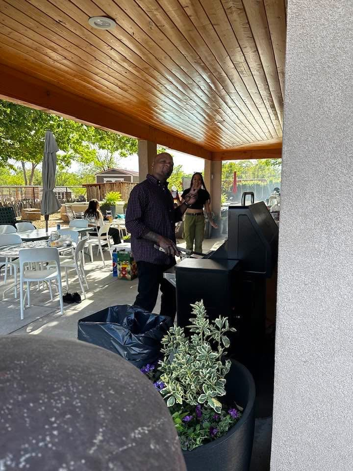

Biassou has loved to golf ever since I've met him, and probably even before that. There has been quite a few times where I have gone with him
on the course and to go and hit balls at a range. The few times I have seen him play, he was spot on. From his form, to the way he would handle
the club, it was very precise. Biassou has all kinds of equipment, such as various types of golf clubs, putters, golf tees,
golf balls, and spotters. Normally around late spring/early summer is when he goes the most. Normally, he will go every Saturday and sometimes
Sunday mornings. He had a group of friends that he would go and play with, but one of them passed away last year due to being very sick.
The last few years or so he hasn't gone as much and my speculation is because he is getting older. There would be times where he went so much,
that my mom would get upset with him because those tee times aren't cheap.
Cooking


Biassou is probably the best cook I've ever met. Maybe I'm bias, maybe I'm not. I moved out four years ago, and I miss it
every day. I go over occasionally, unannounced, just to go over and eat whatever he makes. Him and my switch off on who makes dinner,
and over the years I have picked up on little things in the kitchen watching him. He can make Chinese food, American food, Southern comfort food
Mexican food, etc. He loves to try new foods and different ways to prepare the food. I think his most famous dish is his Mac and Cheese. From
family members, parties, friends, potlucks, it always gets eaten with no leftovers whatsoever. My favorite thing that him and my mom
have been doing in recent years is growing their own herbs and veggies and making meals out of them. My favorite is their homemade salsa.
Absolutely wonderful. There are so many meals I could over that Biassou has made, and his ribs and tri-tip are my favorite. A contender would
be his breakfast. The only part he hates, as well as everyone else, is cleaning up. He has never had an issue cooking for everyone, all he does
is turns on the speaker sitting in the kitchen and does his thing.